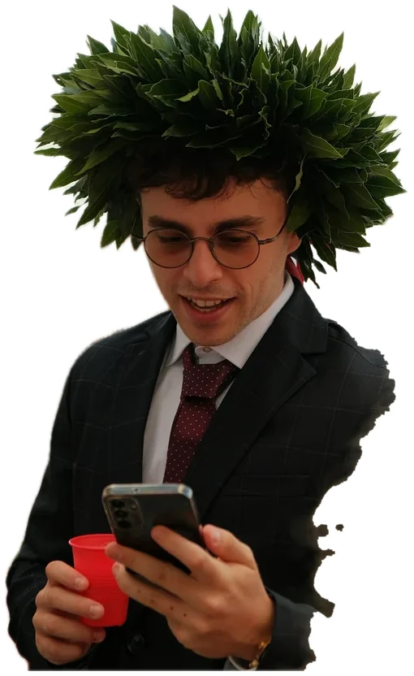
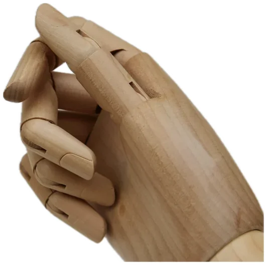
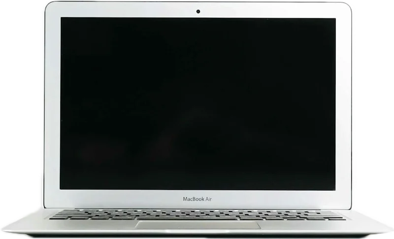

Da 110 e lode.
La discussione dura pochi minuti: con le slide animate la commissione capisce subito il tuo lavoro, e tu lo racconti senza perdere il filo.

80 pagine.
10 minuti.
La commissione ha già ascoltato altre trenta tesi. Se le slide sono muri di testo, si perde dopo la seconda.
Clicca e guarda cosa restaStesso dato.
Altro effetto.
Il contenuto resta il tuo: noi lo studiamo e cambiamo il modo in cui arriva.
- 120 parole diventano una frase
- 5 percentuali diventano un grafico
- 2 secondi per capire il risultato
3.2 Risultati dell'indagine sulla mobilità
Dal questionario somministrato a un campione di 240 studenti nel periodo considerato emerge che il mezzo di trasporto più utilizzato per raggiungere la sede è costituito da autobus e treno (40%), seguito dall'automobile privata (30%), dalla bicicletta (20%) e infine dagli spostamenti a piedi (10%). Complessivamente la quota di studenti che utilizza modalità alternative all'automobile risulta pari al 70% del campione, dato che suggerisce una propensione significativa verso forme di mobilità sostenibile, pur con le limitazioni metodologiche descritte nel paragrafo 2.4 relative alla rappresentatività del campione e all'assenza di informazioni su distanza e frequenza degli spostamenti, che verranno discusse nelle conclusioni.7 studenti su 10
arrivano senza auto
Ogni clic,
un passo.
Il grafico si svela quando lo decidi tu, così l'attenzione resta sul dato di cui stai parlando e non su quelli che vengono dopo.
0 di 4 dati mostrati
Tesi, tesina
o esame orale.
Gira le tre schede: per ogni occasione la presentazione lavora in modo diverso.
Clicca sulle schede · 0 di 3Lezioni seguite
fino all'ultima fila.
Domande a cui la classe risponde, risultati che compaiono sul momento: la lezione diventa una conversazione. Prova tu.
Rispondi alla domanda sullo schermo
Ci mandi la tesi.
Al resto pensa Otto.
Non serve saper usare programmi di animazione: partiamo dal tuo testo e dai tuoi dati, e ti consegniamo la presentazione pronta.
1 di 3